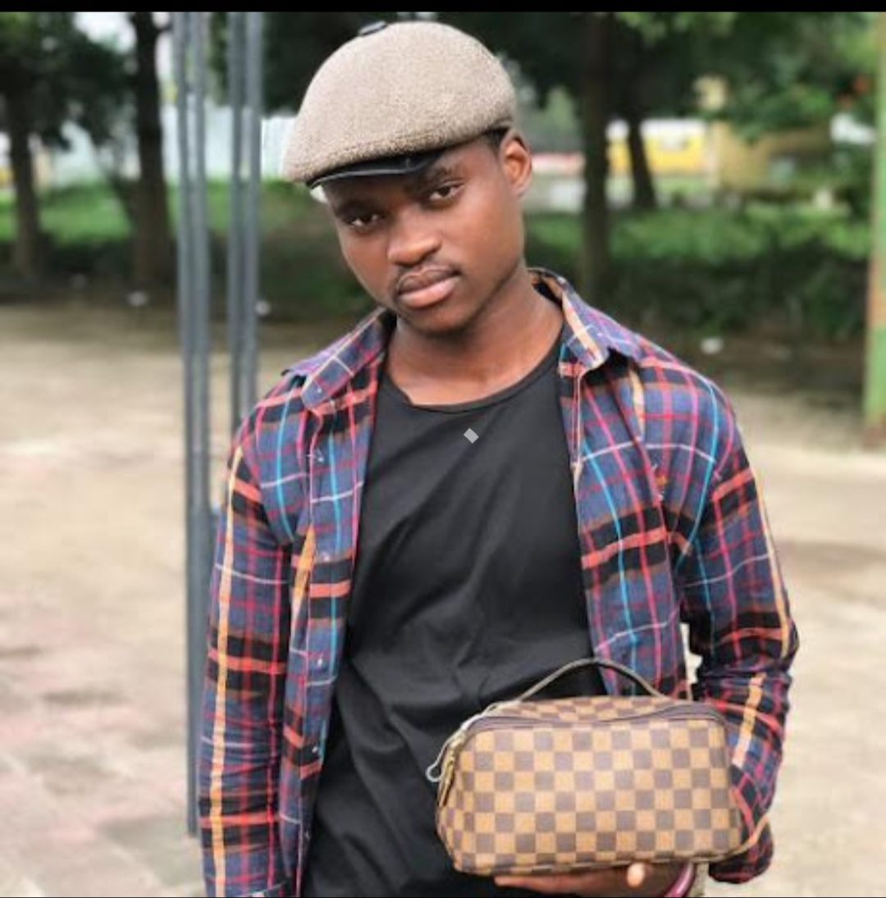

A propos de moi

Winner Ramazani, développeur web
Je m'appelle Winner Ramazani, je suis actuellement en formation de développement web. Avant de me lancer dans ce domaine, j'ai exploré d'autres horizons techniques. Ce qui me passione dans le développement, c'est la capacité à créer des expériences utiles à partir de rien - juste du texte et de la logique.
Mon parcours
- 2017 - 2018:Obtention d'un certificat d'éole primaire.
- 2023 - 2024:Obtention d'un certificat d'école humanite.
- 2025 - Aujourd'hui:Licence en cours.
- 2026 - Aujourd'hui:Formation Développement Web.